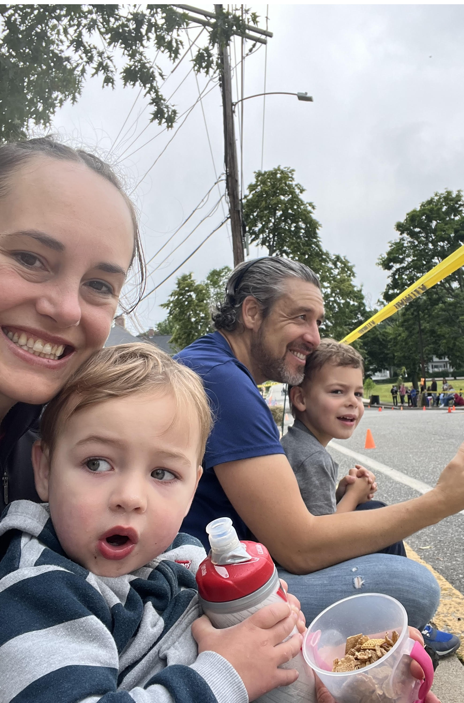

Arlington Center · Massachusetts Avenue
About Local Revolt
Why This Site Exists
It started with Christmas shopping.
A couple of years ago, I set a goal: shop local, as much as possible. Simple enough — except it wasn’t. I didn’t have time to wander into every storefront along the block, and most small businesses don’t have a robust online presence. I ended up defaulting to Amazon, not because I wanted to, but because it was easy. That frustrated me.
Local Revolt is a free, no-profit directory that endeavors to make it easier to discover and engage with local businesses.
But it’s more than that. When we shop local, we keep tax dollars circulating in our own community — which means lower burdens for every resident. When neighbors exchange goods with each other instead of buying new, we reduce waste and build the kind of connections that make a neighborhood feel like home.
And yes — there’s something to be said for not handing your money to massive corporations with values that don’t align with yours.
This site doesn’t take a cut of any sales. It doesn’t process transactions. It exists because Arlington deserves better than empty storefronts — and because the easiest way to fight that is to make shopping local easier.
About Me

I’m a data scientist by profession and Arlington resident of eight years. I spend my days working with numbers and patterns, but what lights me up outside of work is this town — its people, its storefronts, its neighborhoods.
I’m not a city official. I’m just a neighbor who believes that where we spend our money matters — and that small choices, made by enough people, add up to something real.